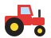
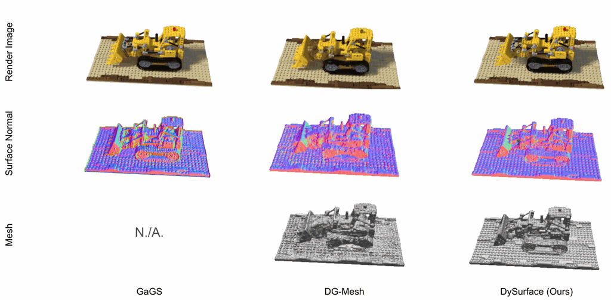
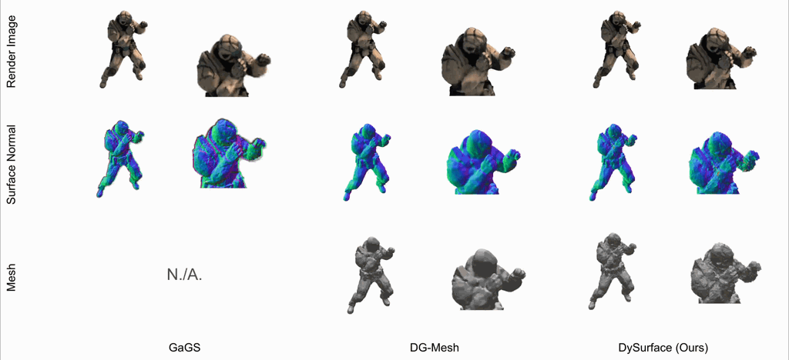
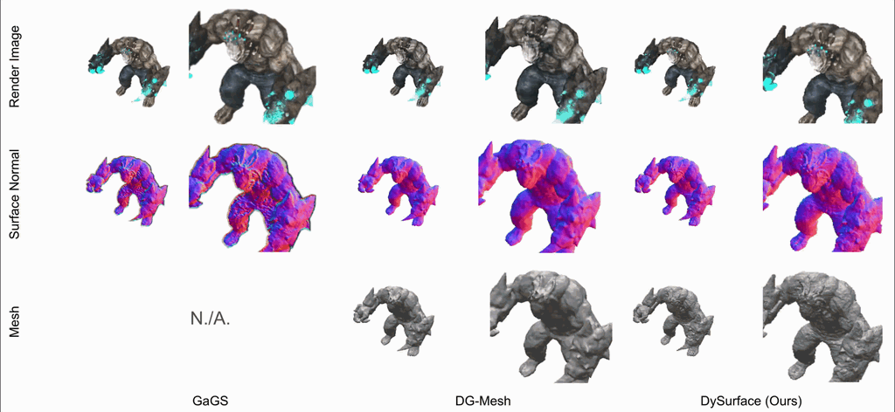
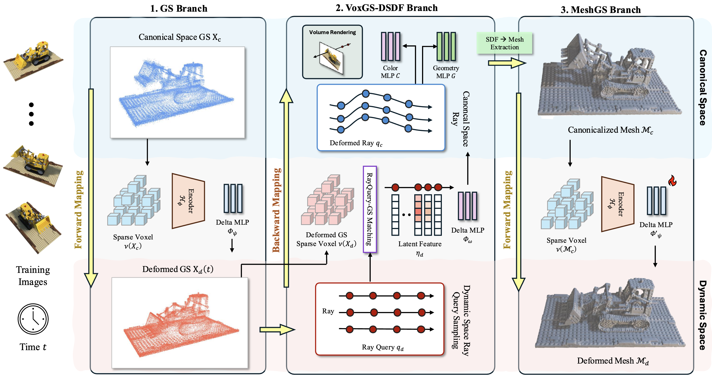

DySurface: Consistent 4D Surface Reconstruction via Bridging Explicit Gaussians and Implicit FunctionsWhile novel view synthesis (NVS) for dynamic scenes has seen significant progress, reconstructing temporally consistent geometric surfaces remains a challenge. Neural Radiance Fields (NeRF) and 3D Gaussian Splatting (3DGS) offer powerful dynamic scene rendering capabilities; however, relying solely on photometric optimization often leads to geometric ambiguities. This results in discontinuous surfaces, severe artifacts, and broken surfaces over time. To address these limitations, we present DySurface, a novel framework that bridges the effectiveness of explicit Gaussians with the geometric fidelity of implicit Signed Distance Functions (SDFs) in dynamic scenes. Our approach tackles the structural discrepancy between the forward deformation of 3DGS ($canonical \rightarrow dynamic$) and the backward deformation required for volumetric SDF rendering ($dynamic \rightarrow canonical$). Specifically, we propose the VoxGS-DSDF branch that leverages deformed Gaussians to construct a dynamic sparse voxel grid, providing explicit geometric guidance to the implicit SDF field. This explicit anchoring effectively regularizes the volumetric rendering process, significantly improving surface reconstruction quality, with watertight boundaries and detailed representations. Quantitative and qualitative experiments demonstrate that DySurface significantly outperforms state-of-the-art baselines in geometric accuracy metrics while maintaining competitive rendering performance.
Given a monocular view video, our method reconstructs high quality mesh extracted from SDF which is leveraged by gaussian splatting. Compared to the baselines, our method shows high-resolution of the mesh with high temporal consistency flow.



Reconstructed surface meshes of the Lego scene from DG-Mesh (left) and DySurface (right). Both viewers share one camera: drag to rotate, scroll to zoom, and right-click and drag to pan in either viewer, and the other follows. Turn off the vertex colors to inspect the bare geometry.
DG-Mesh
Ours
Our framework consists of three branches, learned in a stage-wise manner. (1) GS branch deforms canonical 3DGS into dynamic space using a transform field. (2) VoxGS-DSDF branch anchors the implicit SDF field to the deformed GS voxels through RayQuery-GS matching, resolving the forward-backward mapping gap while volume rendering. (3) MeshGS branch extracts the canonical surface from the learned SDF and refines the transform field.

@InProceedings{kim2025srhand,
author = {Kim, Minje and Noh, Younghyun and Kim, Jaesoon and Kim, Tae-Kyun},
title = {DySurface: Consistent 4D Surface Reconstruction via Bridging Explicit Gaussians and Implicit Functions},
booktitle = {Advances in Neural Information Processing Systems (NIPS)},
year = {2026}
}
This work was in part supported by NST grant (CRC 21015, MSIT), IITP grant (RS-2023-00228996, RS-2024-00459749, RS-2025-25443318, RS-2025-25441313, MSIT) and InnoCORE program (N10260110, MSIT).